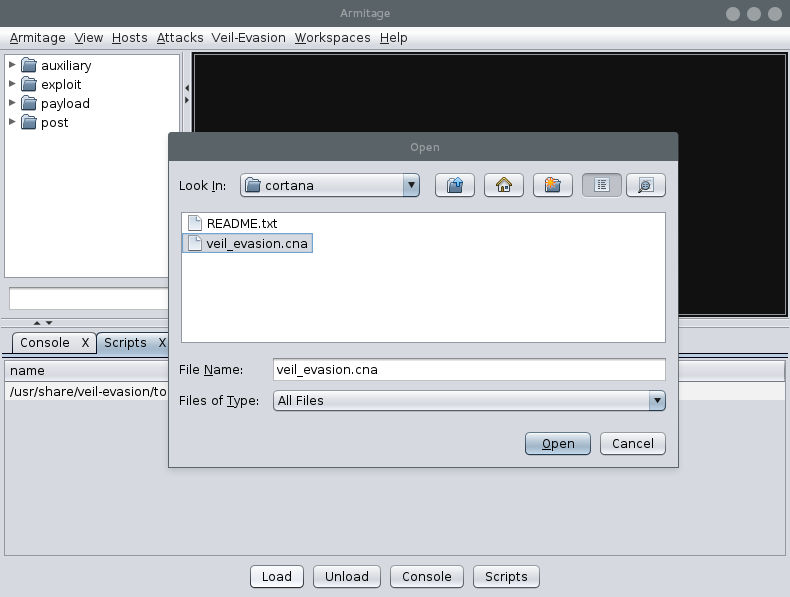
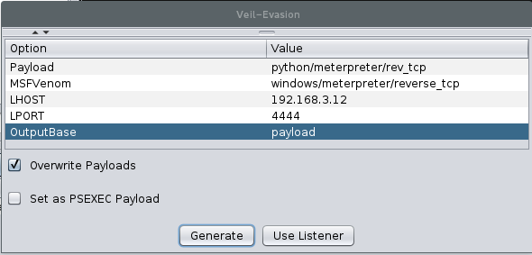

Veilevasion与armitage的集成操作
veil-evasion 是有名的终端下后门生成工具，其免杀效果表现的非常好。armitage 是 metasploit 的图形化操作界面，本文就两者如何集成进行简单说明。
kali 系统下 armitage 是默认安装的， veil-evasion 是需要独立进行安装的，下载地址 https://www.veil-framework.com/framework/veil-evasion。
1. 启动 posgresql 数据库
armitage 的启动依赖于 postgresql 数据库，与 metasploit 共享信息。
service postgresql start
2. 打开 armitage 加载 veil-evasion 模块
依次点击 armitage 菜单，Armitage - Scripts，点击 Load 按钮定位到 veil-evasion 的安装目录中找到 armitage 的扩展文件 veil-evasion/tools/cortanaveil_evasion.cna 加载，加载完成后就会在 armitage 的菜单中看见 Veil-Evasion 的菜单已经被加载到了。

3. 测试生成 payload
点击 armitage 上的 Veil-Evasion 菜单，首次运行会提示输入完整的 veil-evasion 安装路径。配置好生成参数，点击 Generate 按钮即可生成后门文件，也可以点击 Use Listener 按钮开启对后门的监听。
